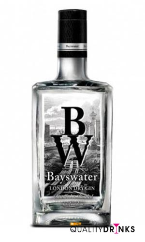

La ginebra Bayswater, es una ginebra premium inglesa del tipo London Dry gin, obtenida de 5 destilaciones independientes. Su sabor es muy suave en el que destacan sus notas cítricas, el cilantro y el enebro.
En Bayswater Gin encontramos 9 ingredientes: Nuez moscada, semilla de cilantro, raíz de angélica, raíz de orris, regaliz, casia, cascara de naranja y limón y bayas de enebro.